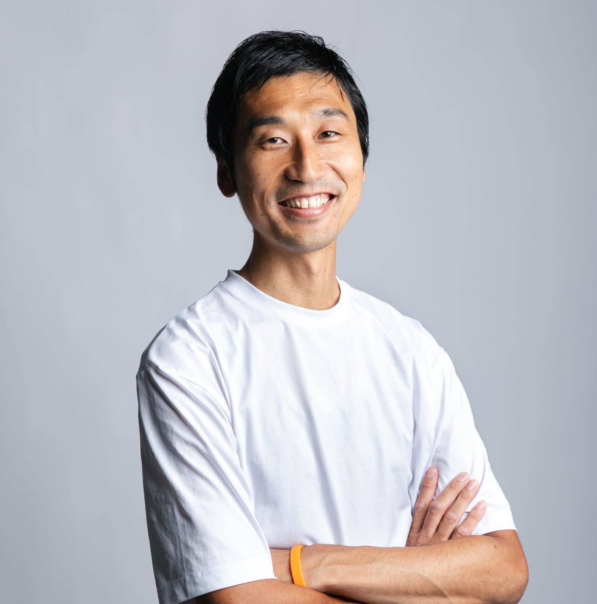

Shimonoseki, Yamaguchi
下関、富任町。
山西水産
Yamanishi Suisan
創業 明治十二年
1878
老舗ふぐ問屋として
0
年

4
代目
山西伸典
山西水産株式会社 代表取締役
変わらないもの、
変えていくもの。
「ふぐ」ではなく、
ふく
不遇ではなく、福を届けたいから。
下関では「ふぐ」を、「福」に通じる「ふく」と呼びます。
四時起きの浜も、AIも両方。
10
モール
＋自社サイトを、1人で運営
0
種
業務の自動化が稼働中
月
0
時間
業務を削減
※ 山西水産での自社実証データ（2023〜2024年）
百四十七年の続きを、
僕らが書いていく。
海からのふく 今日もあなたに
一匹一匹 心を込めて
下関から 届けたいのは
美味しさだけじゃない
幸せのかたち
Theme song ― 潮風と、ふくと。
ふくと生きる、
山西水産。
山西水産株式会社
創業 明治12年（1878年） 山口県下関市富任町1-1-5
lp.yamanisi.co.jp
／ YouTube
@shimofugu
BGM：「潮風と、ふくと。」山西水産 オリジナルテーマソング（制作：Yスタジオ＋）
▶ 音ありで再生
0.0s
MP4